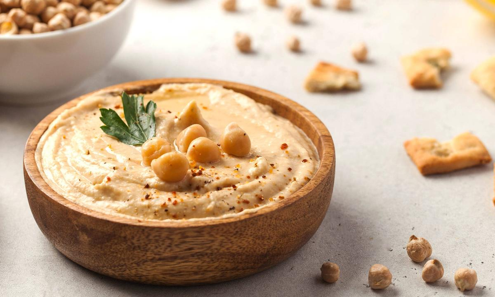

Hummus

Descripción
Se necesitan garbanzos hervidos, limón, sal, pimienta, ajo, tahini y comino
Y un procesador de alimentos o licuadora.
- Garbanzos
- Tahini
- Limón
- Sal, pimienta, comino y ajo en polvo
- Hervir los garbanzos, e idealmente pelarlos, pero se pueden quedar así.
- En el procesador de alimentos añadir todos los ingredientes.
- Moler y listo